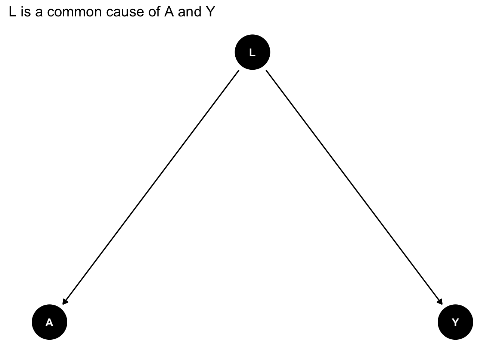
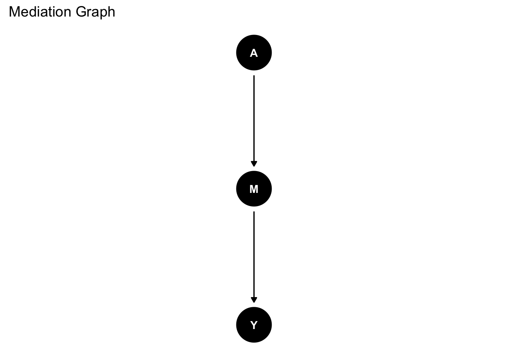
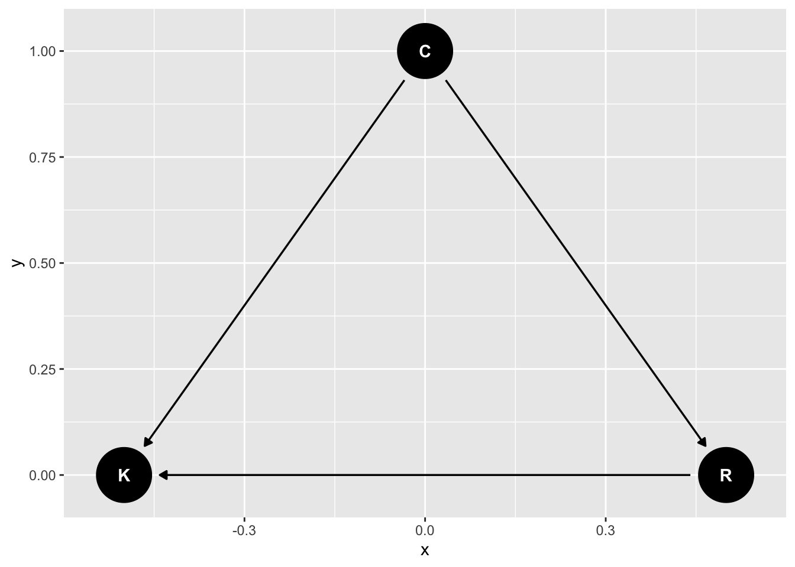
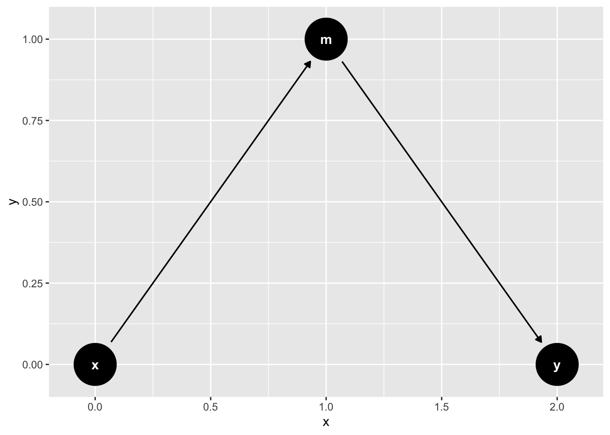

![]()
# data-wrangling
if (!require(tidyverse, quietly = TRUE)) {
install.packages("tidyverse")
library(tidyverse)
}
# graphing
if (!require(ggplot2, quietly = TRUE)) {
install.packages("ggplot2")
library(ggplot2)
}
# automated causal diagrams
if (!require(ggdag, quietly = TRUE)) {
install.packages("ggdag")
library(ggdag)
}
Note
Required - (Hernan and Robins 2024) Chapter 6-9 link
Optional - (Miguel A. Hernán, Hernández-Díaz, and Robins 2004) link - (M. A. Hernán 2017) link - (Miguel A. Hernán and Cole 2009) link - (VanderWeele and Hernán 2012) link
VanderWeele, Tyler J., and Miguel A. Hernán. 2012. “Results on Differential and Dependent Measurement Error of the Exposure and the Outcome Using Signed Directed Acyclic Graphs.” American Journal of Epidemiology 175 (12): 1303–10. https://doi.org/10.1093/aje/kwr458.
Hernán, Miguel A., and Stephen R. Cole. 2009. “Invited Commentary: Causal Diagrams and Measurement Bias.” American Journal of Epidemiology 170 (8): 959–62. https://doi.org/10.1093/aje/kwp293.
Hernán, M. A. 2017. “Invited Commentary: Selection Bias Without Colliders | American Journal of Epidemiology | Oxford Academic.” American Journal of Epidemiology 185 (11): 1048–50. https://doi.org/10.1093/aje/kwx077.
Hernán, Miguel A., Sonia Hernández-Díaz, and James M. Robins. 2004. “A Structural Approach to Selection Bias.” Epidemiology 15 (5): 615–25. https://www.jstor.org/stable/20485961.
Hernan, M. A., and J. M. Robins. 2024. Causal Inference: What If? Chapman & Hall/CRC Monographs on Statistics & Applied Probab. Taylor & Francis. https://www.hsph.harvard.edu/miguel-hernan/causal-inference-book/.
Key concepts for the test(s):
- effect (measure) modification
- undirected/uncorrelated measurement error bias
- undirected/correlated measurement error bias
- directed/uncorrelated measurement error bias
- directed/correlated measurement error bias
- selection bias and transportability
For the lab, copy and paste code chunks following the “LAB 4” section.
Seminar
Learning Outcomes
You will learn the elementary structures of measurement error bias and be able to use them to explain how measurement can go wrong.
You will begin to understand the relationship between structural sources of bias and meaasurement in cross-cultural studies.
You will begin to understand how the concepts of target population and sample population clarify external validity/transportability of results in cross-cultural research.
Common Causal Questions Presented as Causal Graphs
Bulbulia, J. A. 2023. “Causal Diagrams (Directed Acyclic Graphs): A Practical Guide.”
A Typology of Measurement Error Bias
Bulbulia, J. A. 2023. “Causal Diagrams (Directed Acyclic Graphs): A Practical Guide.”
Threats to External Validity
Bulbulia, J. A. 2023. “Causal Diagrams (Directed Acyclic Graphs): A Practical Guide.”
Lab 04
Load libraries
We can use the ggdag package to evaluate confounding .
Omitted Variable Bias Causal Graph
Let’s use ggdag to identify confounding arising from omitting Z in our regression of X on Y.
First we write out the DAG as follows:
# code for creating a DAG
graph_fork <- dagify(Y ~ L,
A ~ L,
exposure = "A",
outcome = "Y") |>
tidy_dagitty(layout = "tree")
# plot the DAG
graph_fork |>
ggdag() + theme_dag_blank() + labs(title = "L is a common cause of A and Y")
Next we ask ggdag which variables we need to include if we are to obtain an unbiased estimate of the outcome from the exposure:
# use this code
ggdag::ggdag_adjustment_set( graph_fork ) + theme_dag_blank() + labs(title = "{L} is the exclusive member of the confounder set for A and Y. Conditioning on L 'd-separates' A and Y ")
The causal graph tells us to obtain an unbiased estimate of A on Y we must condition on L.
And indeed, when we included the omitted variable L in our simulated dateset it breaks the association between X and Y:
# set seed
set.seed(123)
# number of observations
N = 1000
# confounder
L = rnorm(N)
# A is caused by
A = rnorm(N, L)
# Y draws randomly from L but is not caused by A
Y = rnorm(N, L)
# note we did not need to make a data frame
# regress Y on A without control
fit_fork <- lm(Y ~ A)
# A is "significant
parameters::model_parameters(fit_fork)Parameter | Coefficient | SE | 95% CI | t(998) | p
------------------------------------------------------------------
(Intercept) | -0.03 | 0.04 | [-0.11, 0.04] | -0.89 | 0.373
A | 0.50 | 0.03 | [ 0.45, 0.54] | 19.72 | < .001# regress Y on A with control
fit_fork_controlled <- lm(Y ~ A + L)
# A and Y are no longer associated, conditioning worked.
parameters::model_parameters(fit_fork_controlled)Parameter | Coefficient | SE | 95% CI | t(997) | p
------------------------------------------------------------------
(Intercept) | -0.02 | 0.03 | [-0.08, 0.04] | -0.68 | 0.499
A | 0.03 | 0.03 | [-0.03, 0.09] | 0.89 | 0.372
L | 0.95 | 0.05 | [ 0.86, 1.04] | 20.77 | < .001Mediation and causation
Suppose we were interested in the causal effect of X on Y. We have a direct effect of X on Y as well as an indirect effect of X on Y through M. We use ggdag to draw the DAG:
graph_mediation <- dagify(Y ~ M,
M ~ A,
exposure = "A",
outcome = "Y") |>
ggdag::tidy_dagitty(layout = "tree")
graph_mediation |>
ggdag() +
theme_dag_blank() +
labs(title = "Mediation Graph")
Here is another way
graph_mediation_full <- ggdag_mediation_triangle(x = "A",
y = "Y",
m = "M",
x_y_associated = FALSE)
graph_mediation_full + theme_dag_blank() +
labs(title = "Fully Mediated Graph")
What should we condition on if we are interested in the causal effect of changes in X on changes in Y?
We can pose the question to ggdag:
# ask ggdag which variables to condition on:
ggdag::ggdag_adjustment_set(graph_fork)
‘Backdoor Paths Unconditionally Closed’ means that, assuming the DAG we have drawn is correct, we may obtain an unbiased estimate of X on Y without including additional variables.
Later we shall understand why this is the case.1
1 We shall see there is no “backdoor path” from X to Y that would bias our estimate, hence the estimate X->Y is an unbiased causal estimate – again, conditional on our DAG.
For now, we can enrich our language for causal inference by considering the concept of d-connected and d-separated:
Two variables are d-connected if information flows between them (condional on the graph), and they are d-separated if they are conditionally independent of each other.
# use this code to examine d-connectedness
ggdag::ggdag_dconnected(graph_mediation)
In this case, d-connection is a good thing because we can estimate the causal effect of A on Y.
In other cases, d-connection will spoil the model. We have seen this for omitted variable bias. A and Y are d-separated conditional on L, and that’s our motivation for including L. These concepts are tricky, but they get easier with practice.
To add some grit to our exploration of mediation lets simulate data that are consistent with our mediation DAG
First we ask, is X is related to Y?
fit_mediation <- lm(y ~ x_s, data = df)
parameters::model_parameters(fit_mediation)Parameter | Coefficient | SE | 95% CI | t(98) | p
-----------------------------------------------------------------
(Intercept) | 0.19 | 0.14 | [-0.08, 0.47] | 1.41 | 0.161
x s | 1.66 | 0.14 | [ 1.38, 1.93] | 12.00 | < .001Yes.
Next we ask, is A related to Y conditional on M?
fit_total_mediated_effect <- lm(y ~ x_s + m_s, data = df)
parameters::model_parameters(fit_total_mediated_effect) |> parameters::print_html()| Parameter | Coefficient | SE | 95% CI | t(97) | p |
|---|---|---|---|---|---|
| (Intercept) | 0.19 | 0.10 | (4.92e-03, 0.38) | 2.04 | 0.044 |
| x s | 0.77 | 0.13 | (0.51, 1.02) | 6.00 | < .001 |
| m s | 1.33 | 0.13 | (1.07, 1.58) | 10.34 | < .001 |
Yes, but notice this is a different question. The effect of X is attenuated because M contributes to the causal effect of Y.
fit_total_effect <- lm(y ~ x_s, data = df)
parameters::model_parameters(fit_total_effect) |> parameters::print_html()| Parameter | Coefficient | SE | 95% CI | t(98) | p |
|---|---|---|---|---|---|
| (Intercept) | 0.19 | 0.14 | (-0.08, 0.47) | 1.41 | 0.161 |
| x s | 1.66 | 0.14 | (1.38, 1.93) | 12.00 | < .001 |
Pipe confounding (full mediation)
Suppose we are interested in the effect of x on y, in a scenario when m fully mediates the relationship of x on y.
mediation_triangle(
x = NULL,
y = NULL,
m = NULL,
x_y_associated = FALSE
) |>
ggdag()
What variables do we need to include to obtain an unbiased estimate of X on Y?
Let’s fill out this example out by imagining an experiment.
Suppose we want to know whether a ritual action condition (X) influences charity (Y). We have good reason to assume the effect of X on Y happens entirely through perceived social cohesion (M):
X\toM\toZ or ritual \to social cohesion \to charity
Lets simulate some data
set.seed(123)
# Participants
N <-100
# initial charitable giving
c0 <- rnorm(N ,10 ,2)
# assign treatments and simulate charitable giving and increase in social cohesion
ritual <- rep( 0:1 , each = N/2 )
cohesion <- ritual * rnorm(N,.5,.2)
# increase in charity
c1 <- c0 + ritual * cohesion
# dataframe
d <- data.frame( c0 = c0 ,
c1=c1 ,
ritual = ritual ,
cohesion = cohesion )
skimr::skim(d)| Name | d |
| Number of rows | 100 |
| Number of columns | 4 |
| _______________________ | |
| Column type frequency: | |
| numeric | 4 |
| ________________________ | |
| Group variables | None |
Data summary
Variable type: numeric
| skim_variable | n_missing | complete_rate | mean | sd | p0 | p25 | p50 | p75 | p100 | hist |
|---|---|---|---|---|---|---|---|---|---|---|
| c0 | 0 | 1 | 10.18 | 1.83 | 5.38 | 9.01 | 10.12 | 11.38 | 14.37 | ▁▃▇▅▂ |
| c1 | 0 | 1 | 10.43 | 1.85 | 5.89 | 9.17 | 10.30 | 11.57 | 14.99 | ▂▆▇▆▂ |
| ritual | 0 | 1 | 0.50 | 0.50 | 0.00 | 0.00 | 0.50 | 1.00 | 1.00 | ▇▁▁▁▇ |
| cohesion | 0 | 1 | 0.25 | 0.29 | 0.00 | 0.00 | 0.12 | 0.48 | 1.15 | ▇▃▃▁▁ |
Does the ritual increase charity?
If we only include the ritual condition in the model, we find that ritual condition reliable predicts increases in charitable giving:
parameters::model_parameters(
lm(c1 ~ c0 + ritual, data = d)
)Parameter | Coefficient | SE | 95% CI | t(97) | p
----------------------------------------------------------------------
(Intercept) | 0.08 | 0.08 | [-0.07, 0.23] | 1.05 | 0.297
c0 | 0.99 | 7.26e-03 | [ 0.98, 1.01] | 136.74 | < .001
ritual | 0.51 | 0.03 | [ 0.46, 0.56] | 19.33 | < .001Does the ritual increase charity adjusting for levels of social cohesion?
parameters::model_parameters(
lm(c1 ~ c0 + ritual + cohesion, data = d)
)Parameter | Coefficient | SE | 95% CI | t(96) | p
-------------------------------------------------------------------------
(Intercept) | -1.05e-14 | 1.02e-15 | [ 0.00, 0.00] | -10.31 | < .001
c0 | 1.00 | 9.78e-17 | [ 1.00, 1.00] | 1.02e+16 | < .001
ritual | 7.36e-16 | 7.78e-16 | [ 0.00, 0.00] | 0.95 | 0.346
cohesion | 1.00 | 1.36e-15 | [ 1.00, 1.00] | 7.35e+14 | < .001The answer is that the (direct) effect of ritual entirely drops out when we include both ritual and social cohesion. Why is this? The answer is that once our model knows m it does not obtain any new information by knowing x.
If we were interested in assessing x\toy but x were to effect y through m (i.e x\tom\toy) then conditioning on m would block the path from x\toy. Including m leads to Pipe Confounding.
In experiments we should never condition on a post-treatment variable.
Masked relationships
Imagine two variables were to affect an outcome. Both are correlated with each other. One affects the outcome positively and the other affects the outcome negatively. How shall we investigate the causal role of the focal predictor?
Consider two correlated variables that jointly predict Political conservatism (C), religion (R). Imagine that one variable has a positive effect and the other has a negative effect on distress (K6).
First consider this relationship, where conservatism causes religion
library(ggdag)
dag_m1 <- dagify(K ~ C + R,
R ~ C,
exposure = "C",
outcome = "K") |>
tidy_dagitty(layout = "tree")
# graph
dag_m1|>
ggdag()
We can simulate the data:
# C -> K <- R
# C -> R
set.seed(123)
n <- 100
C <- rnorm( n )
R <- rnorm( n , C )
K <- rnorm( n , R - C )
d_sim <- data.frame(K=K,R=R,C=C)First we only condition on conservatism
ms1 <- parameters::model_parameters(
lm(K ~ C, data = d_sim)
)
plot(ms1)
ms1Parameter | Coefficient | SE | 95% CI | t(98) | p
----------------------------------------------------------------
(Intercept) | 0.03 | 0.14 | [-0.24, 0.30] | 0.22 | 0.829
C | -0.19 | 0.15 | [-0.49, 0.11] | -1.24 | 0.219Next, only religion:
ms2<- parameters::model_parameters(
lm(K ~ R, data = d_sim)
)
plot(ms2)
When we add both C and R, we see them “pop” in opposite directions, as is typical of masking:
ms3<- parameters::model_parameters(
lm(K ~ C + R, data = d_sim)
)
plot(ms3)
Note that when you ask ggdag to assess how to obtain an unbiased estimate of C on K it will tell you you don’t need to condition on R.
dag_m1|>
ggdag_adjustment_set()
Yet recall when we just assessed the relationship of C on K we got this:
plot(ms1)Is the DAG wrong?
No. The fact that C\toR is positive and R\toK is negative means that if we were to increase C, we wouldn’t reliably increase K. The total effect of C just isn’t reliable
Collider Confounding
The selection-distortion effect (Berkson’s paradox)
This example is from the book Statistical Rethinking. Imagine in science there is no relationship between the newsworthiness of science and its trustworthiness. Imagine further that selection committees make decisions on the basis of the both newsworthiness and the trustworthiness of scientific proposals.
This presents us with the following graph
dag_sd <- dagify(S ~ N,
S ~ T,
labels = c("S" = "Selection",
"N" = "Newsworthy",
"T" = "Trustworthy")) |>
tidy_dagitty(layout = "nicely")
# Graph
dag_sd |>
ggdag(text = FALSE, use_labels = "label") + theme_dag_blank()
When two arrows enter into an variable, it opens a path of information between the two variables.
Very often this openning of information has disasterous implications. In the human sciences, included variable bias is a woefully underrated problem.
ggdag_dseparated(
dag_sd,
from = "T",
to = "N",
controlling_for = "S",
text = FALSE,
use_labels = "label"
) + theme_dag_blank()
We can use the ggdag package to find colliders among our variables:
# code for finding colliders
ggdag::ggdag_collider(dag_sd,
text = FALSE,
use_labels = "label")The following simulation (by Solomon Kurz) illustrates the selection-distortion effect, which Richard McElreath discusses in Statistical Rethinking:
First simulated uncorrelated variables and a process of selection for sub-populations score high on both indicators.
# simulate selection distortion effect, following Solomon Kurz
# https://bookdown.org/content/4857/the-haunted-dag-the-causal-terror.html
set.seed(123)
n <- 1000 # number of grant proposals
p <- 0.05 # proportion to select
d <-
# uncorrelated newsworthiness and trustworthiness
dplyr::tibble(
newsworthiness = rnorm(n, mean = 0, sd = 1),
trustworthiness = rnorm(n, mean = 0, sd = 1)
) |>
# total_score
dplyr::mutate(total_score = newsworthiness + trustworthiness) |>
# select top 10% of combined scores
dplyr::mutate(selected = ifelse(total_score >= quantile(total_score, 1 - p), TRUE, FALSE))Next filter out the high scoring examples, and assess their correlation.
Note that the act of selection induces a correlation within our dataset.
d |>
dplyr::filter(selected == TRUE) |>
dplyr::select(newsworthiness, trustworthiness) |>
cor() newsworthiness trustworthiness
newsworthiness 1.0000000 -0.7318408
trustworthiness -0.7318408 1.0000000This makes it seems as if there is a relationship between Trustworthiness and Newsworthiness in science, even when there isn’t any.
# we'll need this for the annotation
library(ggplot2)
text <-
dplyr::tibble(
newsworthiness = c(2, 1),
trustworthiness = c(2.25, -2.5),
selected = c(TRUE, FALSE),
label = c("selected", "rejected")
)
d |>
ggplot2::ggplot(aes(x = newsworthiness, y = trustworthiness, color = selected)) +
ggplot2::geom_point(aes(shape = selected), alpha = 3 / 4) +
ggplot2::geom_text(data = text,
aes(label = label)) +
ggplot2::geom_smooth(
data = d |> filter(selected == TRUE),
method = "lm",
fullrange = T,
color = "lightblue",
se = F,
size = 1
) +
# scale_color_manual(values = c("black", "lightblue")) +
ggplot2::scale_shape_manual(values = c(1, 19)) +
ggplot2::scale_x_continuous(limits = c(-3, 3.9), expand = c(0, 0)) +
ggplot2::coord_cartesian(ylim = range(d$trustworthiness)) +
ggplot2::theme(legend.position = "none") +
ggplot2::xlab("Newsworthy") +
ggplot2::ylab("Trustworthy") + theme_bw()
Once we know a proposal has been selected, if it is newsworthy we can predict that it is less trustworthy. Our simulation produces this prediction even though we simulated a world in which there is no relationship between trustworthiness and newsworthiness.
Selection bias is commonplace.
Collider bias within experiments
We noted that conditioning on a post-treatment variable can induce bias by blocking the path between the experimental manipulation and the outcome. However, such conditioning can open a path even when there is no experimental effect.
dag_ex2 <- dagify(
C1 ~ C0 + U,
Ch ~ U + R,
labels = c(
"R" = "Ritual",
"C1" = "Charity-post",
"C0" = "Charity-pre",
"Ch" = "Cohesion",
"U" = "Religiousness (Unmeasured)"
),
exposure = "R",
outcome = "C1",
latent = "U"
) |>
control_for(c("Ch","C0"))
dag_ex2 |>
ggdag( text = FALSE,
use_labels = "label")
How do we avoid collider-bias here?
Note what happens if we condition on cohesion?
dag_ex2 |>
ggdag_collider(
text = FALSE,
use_labels = "label"
) +
ggtitle("Cohesion is a collider that opens a path from ritual to charity")
Don’t condition on a post-treatment variable!
dag_ex3 <- dagify(
C1 ~ C0,
C1 ~ U,
Ch ~ U + R,
labels = c(
"R" = "Ritual",
"C1" = "Charity-post",
"C0" = "Charity-pre",
"Ch" = "Cohesion",
"U" = "Religiousness (Unmeasured)"
),
exposure = "R",
outcome = "C1",
latent = "U"
)
ggdag_adjustment_set(dag_ex3)Taxonomy of confounding
There is good news. Remember, ultimately are only four basic types of confounding:
The Fork (omitted variable bias)
confounder_triangle(x = "Coffee",
y = "Lung Cancer",
z = "Smoking") |>
ggdag_dconnected(text = FALSE,
use_labels = "label")The Pipe (fully mediated effects)
mediation_triangle(
x = NULL,
y = NULL,
m = NULL,
x_y_associated = FALSE
) |>
tidy_dagitty(layout = "nicely") |>
ggdag()
The Collider
collider_triangle() |>
ggdag_dseparated(controlling_for = "m")Confounding by proxy
If we “control for” a descendant of a collider, we will introduce collider bias.
dag_sd <- dagify(
Z ~ X,
Z ~ Y,
D ~ Z,
labels = c(
"Z" = "Collider",
"D" = "Descendant",
"X" = "X",
"Y" = "Y"
),
exposure = "X",
outcome = "Y"
) |>
control_for("D")
dag_sd |>
ggdag_dseparated(
from = "X",
to = "Y",
controlling_for = "D",
text = FALSE,
use_labels = "label"
) +
ggtitle("X --> Y, controlling for D",
subtitle = "D induces collider bias")
Rules for avoiding confounding
From Statistical Rethinking, p.286
List all of the paths connecting X (the potential cause of interest) and Y (the outcome).
Classify each path by whether it is open or closed. A path is open unless it contains a collider.
Classify each path by whether it is a backdoor path. A backdoor path has an arrow entering X.
If there are any open backdoor paths, decide which variable(s) to condition on to close it (if possible).
# Examle
# call ggdag model
# write relationships:
library(ggdag)
dg_1 <- ggdag::dagify(
b ~ im + ordr + rel + sr + st,
rel ~ age + ses + edu + male + cny,
ses ~ cny + edu + age,
edu ~ cny + male + age,
im ~ mem + rel + cny,
mem ~ age + edu + ordr,
exposure = "sr",
outcome = "b",
labels = c(
"b" = "statement credibility",
"sr" = "source",
"st" = "statement",
"im" = "importance",
"mem" = "memory",
"s" = "source",
"rel" = "religious",
"cny" = "country",
"mem" = "memory",
"male" = "male",
"ordr" = "presentation order",
"ses" = "perceived SES",
"edu" = "education",
"age" = "age"
)
) |>
control_for("rel")
ggdag::ggdag_collider(dg_1, text = FALSE, use_labels = "label")
Note the colliders induced from the “controls” that we had included in the study:
p3 <- ggdag::ggdag_dseparated(
dg_1,
from = "sr",
to = "b",
controlling_for = c("ses", "age", "cny", "im", "edu", "mem", "male", "rel"),
text = FALSE,
use_labels = "label"
) +
theme_dag_blank() +
labs(title = "Collider Confounding occurs when we `control for` a bunch of variables")
p3How do we fix the problem? Think hard about the causal network and let ggdag do the work.
# find adjustment set
p2 <- ggdag::ggdag_adjustment_set(dg_1,
text = FALSE,
use_labels = "label") +
theme_dag_blank() +
labs(title = "Adjustment set",
subtite = "Model for Source credibility from belief ")
p2
Inference depends on assumptions that are not contained in the data.
regression itself does not provide the evidence you need to justify a causal model. Instead, you need some science.” – Richard McElreath: “Statistical Rethinking, Chapter 6”
“…the data alone can never tell you which causal model is correct”- Richard McElreath: “Statistical Rethinking” Chapter 5
“The parameter estimates will always depend upon what you believe about the causal model, because typically several (or very many) causal models are consistent with any one set of parameter estimates.” “Statistical Rethinking” Chapter 5
Suppose we assume that the source condition affects religion, say through priming. We then have the following dag:
## adding religion to effect on edu
dg_3 <- ggdag::dagify(
b ~ im + ordr + rel + st + sr,
rel ~ age + ses + edu + male + cny + sr,
ses ~ cny + edu + age,
edu ~ cny + male + age,
im ~ mem + rel + cny,
mem ~ age + edu + ordr,
exposure = "rel",
outcome = "b",
labels = c(
"b" = "statement credibility",
"sr" = "source",
"st" = "statement",
"im" = "importance",
"mem" = "memory",
"s" = "source",
"rel" = "religious",
"cny" = "country",
"mem" = "memory",
"male" = "male",
"ordr" = "presentation order",
"ses" = "perceived SES",
"edu" = "education",
"age" = "age"
)
)|>
control_for("rel")
ggdag(dg_3, text = FALSE, use_labels = "label")
We turn to our trusted oracle, and and ask: “What do we condition on to obtain an unbiased causal estimate?”
The oracle replies:
ggdag::ggdag_adjustment_set(
dg_3,
exposure = "sr",
outcome = "b",
text = FALSE,
use_labels = "label"
) +
theme_dag_blank() +
labs(title = "Adjustment set",
subtite = "Model for Source credibility from belief ")
Your data cannot answer your question.
More examples of counfounding/de-confounding
Here’s another example from recent NZAVS research
tidy_ggdag <- dagify(
WB ~ belief + age_within + age_between + partner + nzdep + urban + male + pols + empl,
WB ~~ partner,
belief ~ age_within + age_between + male + ethn,
partner ~ nzdep + age_within + age_between + belief,
nzdep ~ empl + age_within + age_between,
pols ~ age_within + age_between + empl + ethn,
empl ~ edu + ethn + age_within + age_between,
exposure = "belief",
outcome = "WB")|>
tidy_dagitty()
# graph
tidy_ggdag |>
ggdag()
We can examine which variables to select, conditional on the causal assumptions of this dag
# graph adjustment sets
ggdag::ggdag_adjustment_set(tidy_ggdag, node_size = 14) +
theme(legend.position = "bottom") + theme_dag_blank()
This method reveals two adjustments sets: {age, employment, male, political conservativism, and time}, and {age, ethnicty, male, and time.} We report the second set because employment is likely to contain more measurement error: some are not employed because they cannot find employment, others because they are not seeking employment (e.g. retirement).
Unmeasured causes
Return to the previous example of R and C on K6 distress, but imagine an underlying common cause of both C and R (say childhood upbringing) called “U”:
dag_m3 <- dagify(
K ~ C + R,
C ~ U,
R ~ U,
exposure = "C",
outcome = "K",
latent = "U"
) |>
tidy_dagitty(layout = "nicely")
dag_m3 |>
ggdag()
How do we assess the relationship of C on K?
We can close the backdoor from U through R by conditioning on R
ggdag::ggdag_adjustment_set(dag_m3)Aside, we can simulate this relationship using the following code:
# C -> K <- R
# C <- U -> R
n <- 100
U <- rnorm( n )
R <- rnorm( n , U )
C <- rnorm( n , U )
K <- rnorm( n , R - C )
d_sim3 <- data.frame(K = K, R = R, U = U, C = C )What is the relationship between smoking and cardiac arrest?
This example is from the ggdag package, by Malcolm Barrett here
smoking_ca_dag <- dagify(
cardiacarrest ~ cholesterol,
cholesterol ~ smoking + weight,
smoking ~ unhealthy,
weight ~ unhealthy,
labels = c(
"cardiacarrest" = "Cardiac\n Arrest",
"smoking" = "Smoking",
"cholesterol" = "Cholesterol",
"unhealthy" = "Unhealthy\n Lifestyle",
"weight" = "Weight"
),
latent = "unhealthy",
exposure = "smoking",
outcome = "cardiacarrest"
)
ggdag(smoking_ca_dag,
text = FALSE,
use_labels = "label")What do we condition on to close any open backdoor paths, while avoiding colliders? We imagine that unhealthy lifestyle is unmeasured.
ggdag_adjustment_set(
smoking_ca_dag,
text = FALSE,
use_labels = "label",
shadow = TRUE
)What if we control for cholesterol?
ggdag_dseparated(
smoking_ca_dag,
controlling_for = c("weight", "cholesterol"),
text = FALSE,
use_labels = "label",
collider_lines = FALSE
)
Controlling for intermediate variables may also induce bias, because it decomposes the total effect of x on y into its parts. (ggdag documentation)
Selection bias in sampling
This example is from https://ggdag.malco.io/articles/bias-structures.html
Let’s say we’re doing a case-control study and want to assess the effect of smoking on glioma, a type of brain cancer. We have a group of glioma patients at a hospital and want to compare them to a group of controls, so we pick people in the hospital with a broken bone, since that seems to have nothing to do with brain cancer. However, perhaps there is some unknown confounding between smoking and being in the hospital with a broken bone, like being prone to reckless behavior. In the normal population, there is no causal effect of smoking on glioma, but in our case, we’re selecting on people who have been hospitalized, which opens up a back-door path:
coords_mine <- tibble::tribble(
~name, ~x, ~y,
"glioma", 1, 2,
"hospitalized", 2, 3,
"broken_bone", 3, 2,
"reckless", 4, 1,
"smoking", 5, 2
)
dagify(hospitalized ~ broken_bone + glioma,
broken_bone ~ reckless,
smoking ~ reckless,
labels = c(hospitalized = "Hospitalization",
broken_bone = "Broken Bone",
glioma = "Glioma",
reckless = "Reckless \nBehavior",
smoking = "Smoking"),
coords = coords_mine) |>
ggdag_dconnected("glioma", "smoking", controlling_for = "hospitalized",
text = FALSE, use_labels = "label", collider_lines = FALSE)
Even though smoking doesn’t actually cause glioma, it will appear as if there is an association. Actually, in this case, it may make smoking appear to be protective against glioma, since controls are more likely to be smokers.
Selection bias in longitudinal research
Suppose we want to estimate the effect of ethnicity on ecological orientation in a longitudinal dataset where there is selection bias from homeownership (it is easier to reach homeowners by the mail.)
Suppose the following DAG:
dag_sel <- dagify(
retained ~ homeowner,
homeowner ~ income + ethnicity,
ecologicalvalues ~ ethnicity + income,
labels = c(
retained = "retained",
homeowner = "homeowner",
ethnicity = "ethnicity",
income = "income",
ecologicalvalues = "Ecological \n Orientation"
),
exposure = "ethnicity",
outcome = "ecologicalvalues"
) |>
control_for("retained")
dag_sel |>
ggdag_adjust(
"retained",
layout = "mds",
text = FALSE,
use_labels = "label",
collider_lines = FALSE
)
Notice that “retained” falls downstream from a collider, “home ownership”
ggdag_collider(dag_sel)
Because we are stratifying on “retained”, we introduce collider bias in our estimate of ethnicity on ecological values.
ggdag_dseparated(
dag_sel,
controlling_for = "retained",
text = FALSE,
use_labels = "label",
collider_lines = TRUE
)
However we have an adjustment set
ggdag_adjustment_set(dag_sel)Workflow
- Import your data
- Check that data types are correct
- Graph your data
- Consider your question
- If causal, draw your DAG/S
- Explain your DAG’s
- Write your model
- Run your model
- Graph and interpret your results
- Return to your question, and assess what you have learned.
(Typically there are multiple iterations between these steps in your workflow. Annotate your scripts; keep track of your decisions)
Summary
- We control for variables to avoid omitted variable bias
- Omitted variable bias is real, but also commonplace is included variable bias
- Included variable biases arise from “pipes”, “colliders”, and conditioning on descendant of colliders.
- The
ggdagpackage can help you to obtain causal inference, but it relies on assumptions that are not part of your data. - Clarify your assumption.